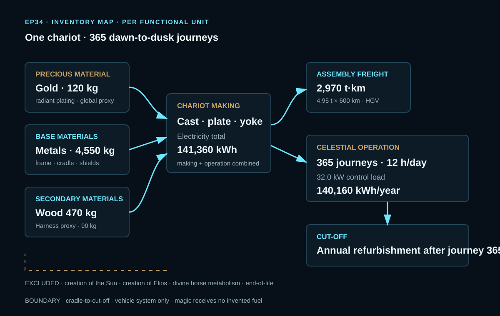
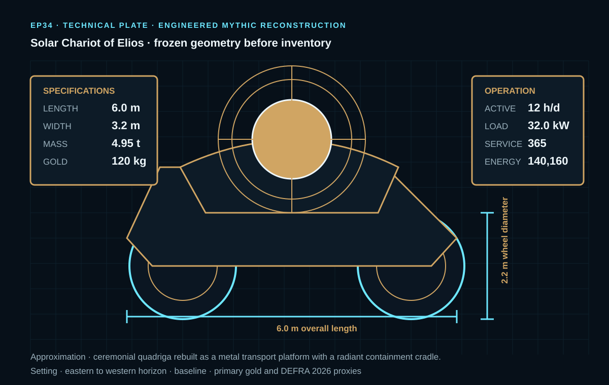
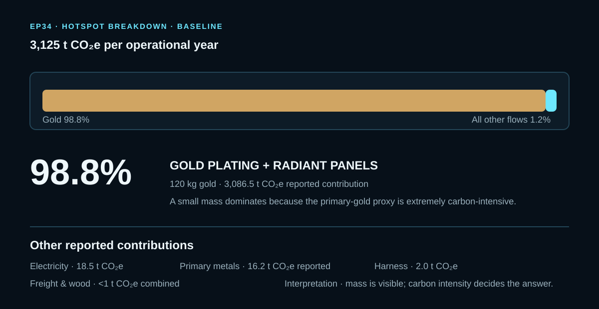

EPISODE #34 · MYTHS & LEGENDS
Solar Chariot of Elios
What happens when a thin golden surface carries more carbon than the machinery beneath it?
THE SUBJECT
A ceremonial quadriga becomes an engineered transport platform.
The approved episode reconstructs the Solar Chariot of Elios as a 4.95 t metal vehicle with a radiant containment cradle, 120 kg of gold plating and a finite one-year duty cycle. The physical object is frozen before the inventory and sensitivities so the calculation follows one defined machine rather than an elastic myth.
The boundary measures the vehicle system, not the cosmic story. Gold and metal supply, chariot making, assembly freight, auxiliary stabilisation and annual maintenance are included. Creation of the Sun, creation of Elios, divine horse metabolism and end-of-life are excluded. The model stops after the 365th celestial journey and annual refurbishment.
Reconstructed scale
6.0 m long, 3.2 m wide, 2.2 m wheels and 4.95 t reference-flow mass before annual repair.
Duty cycle
365 journeys, 12 h/day active time and a 32.0 kW guidance-and-heat-control load.
Main hotspot
120 kg of gold plating contributes 98.8% of the modeled baseline footprint.
Structural uncertainty
Changing gold mass or gold carbon intensity moves the answer by thousands of tonnes of CO₂e.
VISUAL MODEL
From metal supply to the 365th dawn
The inventory map separates physical supply, making, logistics and stabilisation from the excluded cosmic narrative.


LIFE CYCLE INVENTORY
The inventory behind the sunlight
All activity data, factors and reported result values below are taken from the approved episode. Where the episode reports a grouped contribution, the website keeps it grouped rather than inventing a split.
| Stage | Component / activity | Activity data | Climate change | Modelling basis |
|---|---|---|---|---|
| Material supply | Gold panels / radiant plating | 120 kg | 3,086.5 t CO₂e | 2024 global primary-gold proxy: 25,720.6 kg CO₂e/kg. Gold has no DEFRA material-use factor in the approved model. |
| Material supply | Primary metals | 4,550 kg | 16.2 t CO₂e (reported) | Frame, cradle and shields; DEFRA 2026 UK factor reported as 3.8219 kg CO₂e/kg. |
| Materials & repair | Wood | 470 kg | Reported with freight as <1 t CO₂e | Wheels and repair; DEFRA 2026 UK factor 0.2695 kg CO₂e/kg. |
| Harness | Leather / textile proxy | 90 kg | 2.0 t CO₂e | DEFRA 2026 UK harness proxy: 22.310 kg CO₂e/kg. |
| Making + operation | Electricity | 141,360 kWh | 18.5 t CO₂e | DEFRA 2026 UK electricity: 0.13096 kg CO₂e/kWh. The approved episode separately identifies 140,160 kWh/year as the stabilisation load. |
| Assembly logistics | HGV freight | 2,970 t·km | Reported with wood as <1 t CO₂e | 4.95 t × 600 km; DEFRA 2026 UK HGV factor 0.10356 kg CO₂e/t·km. |
Boundary
Cradle-to-cut-off: gold and metal supply, chariot making, assembly freight, auxiliary stabilisation and annual maintenance.
Excluded
Creation of the Sun, creation of Elios, divine horse metabolism and end-of-life. Magic receives no invented fuel.
Control energy
32.0 kW × 12 h/day × 365 days gives the approved 140,160 kWh annual stabilisation load; total electricity in the inventory is 141,360 kWh.
Source consistency note
The approved carousel reports primary metals at 16.2 t CO₂e while separately listing 4,550 kg and a 3.8219 kg/kg factor. This website retains the approved reported contribution and does not silently reconcile that internal source discrepancy.
HOTSPOT
The gold makes the Sun heavy
A thin-looking precious layer controls the result because carbon intensity, not mass alone, decides the answer.

Main result
3,125 t CO₂e
Per one operational year.
Gold
3,086.5 t CO₂e · 98.8%
The 120 kg radiant layer dominates the model.
Electricity
18.5 t CO₂e
Operational energy matters, but remains below 1% of the total.
Primary metals
16.2 t CO₂e
The approved reported breakdown value for the frame, cradle and shields.
Sensitivity A · gold layer
30 kg → 810 t CO₂e
120 kg → 3,125 t CO₂e
240 kg → 6,212 t CO₂e
Changing one physical assumption moves the result by thousands of tonnes.
Sensitivity B · gold intensity
8,359 kg/kg Au → 1,041 t CO₂e
25,721 kg/kg Au → 3,125 t CO₂e
88,543 kg/kg Au → 10,664 t CO₂e
The gold proxy matters because gold is almost the whole answer.
Interpretation
Gold dominates. Energy is secondary. Most tonnes of chariot metal matter less than the precious surface layer.
Uncertainty
Uncertainty is structural: changing gold intensity alone moves the result from 1,041 to 10,664 t CO₂e.
THE VERDICT
A golden surface can outweigh the machinery beneath it.
Mass is visible; carbon intensity decides the answer.